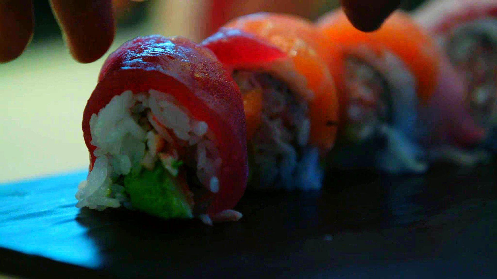
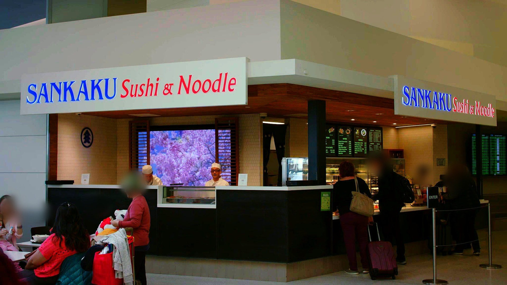
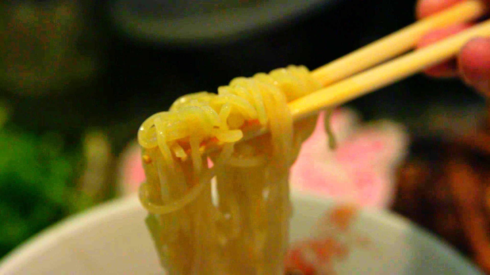
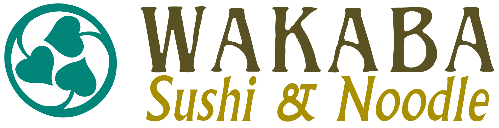

Extra
Our Story
A short film from our family restaurant. The people, the counter and the food behind every plate.
Video placeholder: sanraku02.mp4 (the footage shows our Sanraku restaurant).
 EXTRA · OUR STORY
EXTRA · OUR STORYSushi, ramen and rice bowls made fresh for travelers, with a cold beer or sake if you’ve earned it. Slow down for a minute at Sankaku.
Layover or long-haul, you deserve something better than a sad sandwich. Our sushi and noodles are made for people on the move.
 Featured · flysfo.com
Featured · flysfo.com Featured · flysfo.com
Featured · flysfo.com


Prices from the 2020 printed menu; to be confirmed before launch. Food photos are from the family’s sister kitchen (Wakaba): swap in Sankaku shots when available.


Whether you just landed or you’re about to leave, Sankaku is the easy, tasty stop between flights.
“Many visitors to SFO are seeking authentic Japanese food. We are proud to offer the highest quality Japanese food for travelers as they make their way through SFO.”Kimiko Hattori, ownerwith her son Hiroyuki Hattori · quote adapted from flysfo.com, confirm wording and permission



A short film from our family restaurant. The people, the counter and the food behind every plate.
Video placeholder: sanraku02.mp4 (the footage shows our Sanraku restaurant).
EXTRA · OUR STORY